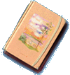

|

머릿속에 스치는 생각들을 주저리 주저리 늘어놓는것,
그때의 생각을 남겨두고 싶은것.. 그뿐.
" 나의 생각만의 노트 " 이 공책을 처음 사면서 제가 적어 놓았던 제목입니다.
거기에 잡다한것들을 쓰기 시작한건 그때부터였습니다.
그리고, 그곳에는 제 생각들이 묻어있습니다.
귀퉁이가 다 닳아버린 손바닥만한 책이지만, 제게는 큰 가치를 가지게 되어버렸습니다.
아무래도, 21세기가 다가오다보니, 개인 자료 백업도 전산화를 해야할것 같아서, 여기다 실어 놨습니다.
|
피곤할때, 나는 가끔 옛날의 내가 있는 낡은 노트를 들춰본다.
|
|
[C] Copyright in Webmaster : the story in forest / Fstory
pebble78@nownuri.net
Soongsil univ computer science school 97'
|